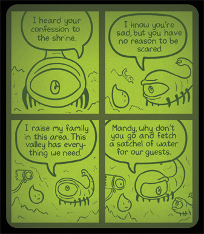

Sad Castle is my love letter to Zelda II: The Adventure of Link (1987) for the NES. As a kid, I found the game mysterious and fascinating. It was both familiar to me as a part of the Zelda series while remaining visually, sonically, and mechanically unique. And it was very difficult, which meant I never got too far on any of my playthroughs. At the time I accepted it for what it was, believing that anything I encountered that was too opaque or confusing was proof that it was a game meant for someone more mature. It wasn’t until later on that I realized that the game is generally seen as an offbeat entry in the series. An experiment by the developers to see what Zelda could be. A peculiar dead-end.
It’s this strange nostalgia that inspired me to use the setting and characters from Zelda II as a jumping off point.
The first page of the comic depicts a Link-type character going through the motions of exploring and completing a castle. He fights the bad guys, finds the treasure, and defeats the boss. The rest of the story follows the surviving creatures dealing with this wake of destruction, coping with the death of their patriarch and the uncertainty that lies ahead.